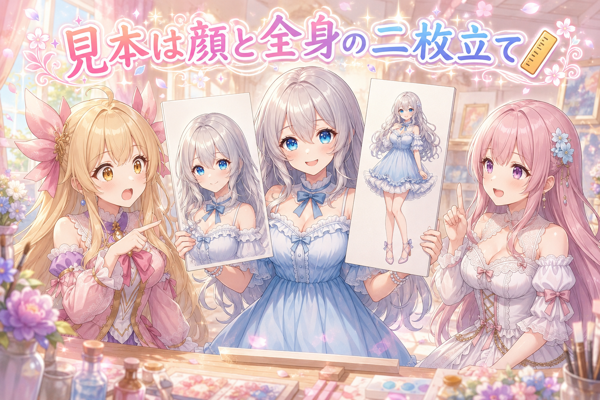
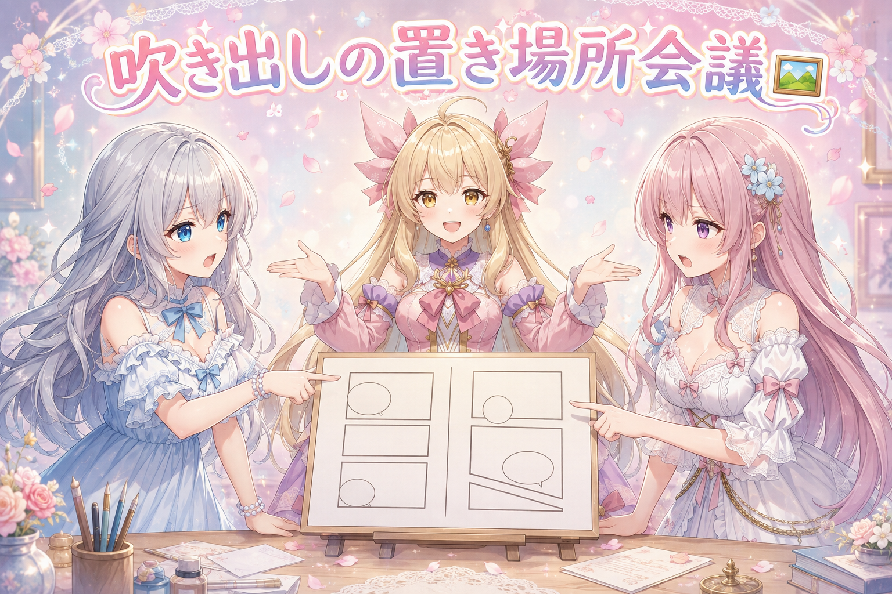
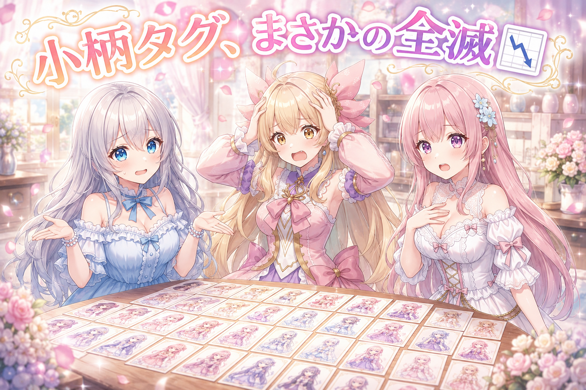
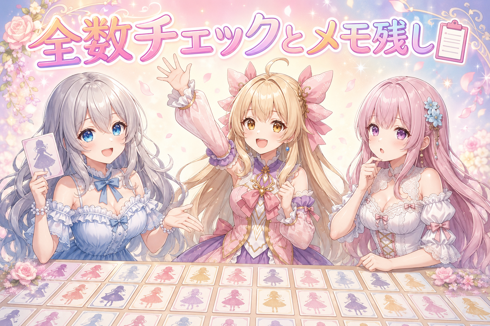
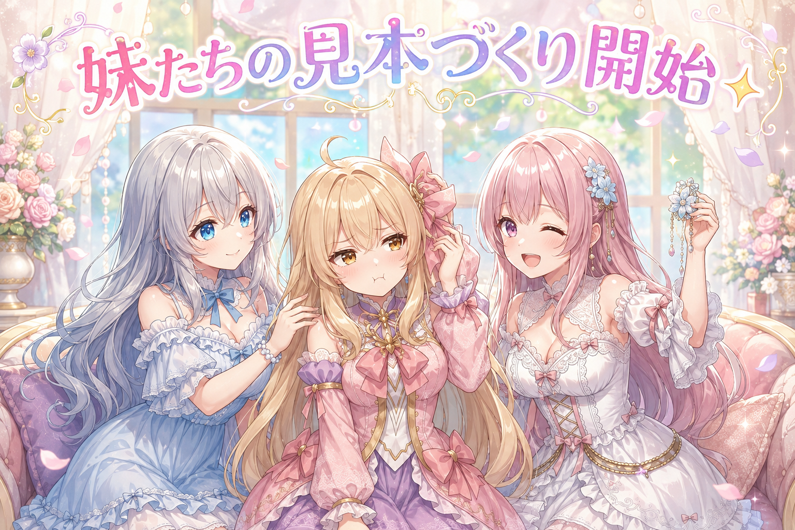
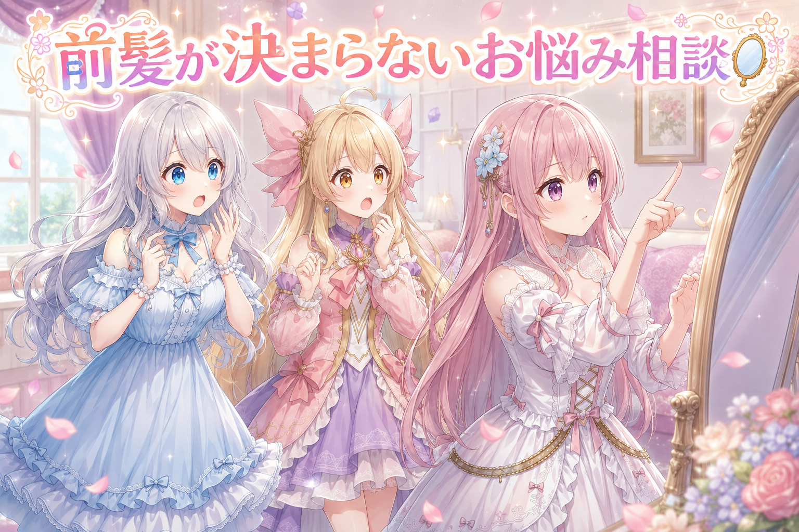

📌 3行まとめ
- キャラの見本画像を「顔アップ」と「全身」の二枚立てに作り直し、参照する役割を分けた
- 4コマ漫画の自動組み立てに斜めコマ・吹き出しの優先順位・擬音語の配置・画面外の声の表現を追加
- 体型まわりのタグ検証は小柄指定が全滅、サイズ指定は中庸で確定。身長ズレは今日は直らず

ルピナス （笑顔）
はい、今日もこの時間がやってきました。三姉妹のゆるいものづくり中継、進行はルピナスです。

アイリス （大笑い）
中継って言うと現場感あるね！前回は切り抜きの採点で、あたしとフィオナの身長差が伸びすぎて大騒ぎだったやつ！

フィオナ （ふつう）
ふふ、あの身長問題は今日も顔を出しますよ。というより、今日は根っこの方に手を入れる一日でした。

ルピナス （ドヤ顔）
そう。見本の作り直し、4コマの組み立て、そして体型タグの大失敗。盛りだくさんでお届けするよ。
1. 顔アップの見本を作り直した📏

AI に同じキャラクターを何度も描いてもらうときは、基準になる「見本の絵」がいります。これまでは全身の見本を一枚だけ渡していたのですが、できあがった素材を並べると顔つきが少しずつ違う。しかも設定より背が高く出る。
そこで今日はまず、いつも使っている全身の見本から顔アップの見本を新しく作りました。以降は「顔は顔アップの見本を見る」「体つき・華奢さ・身長・髪の長さと髪型は全身の見本を見る」と、参照先を役割ごとに分けて指示する形に変更。まず数枚だけ試して手ごたえを確かめ、問題ないと判断してから残り50枚ほどを同じやり方で作り直しました。

ルピナス （ふつう）
さあ実況でいくよ。現在、私の顔アップ見本が生成中……出ました。どうかな二人とも。

アイリス （びっくり）
うわ、目のハイライトめっちゃきれい！お姉ちゃんの目、こんなに光ってたっけ？

フィオナ （笑顔）
光の入れ方を自然にとお願いしていましたから。それより注目すべきは、この一枚が今後の全部の基準になるという点ですね。

アイリス （考え中）
でもさ、なんで今まで全身一枚でうまくいかなかったの？
ルピナス （ふつう）
全身の見本って、顔が小さく写ってるでしょ。だから「顔の細かいところ」の情報が足りなくて、毎回ちょっとずつ想像で埋められちゃうの。
フィオナ （ふつう）
反対に、顔アップだけを渡すと今度は身長や体つきが分かりません。だから両方渡して、どちらの何を見るかまで書いてしまうわけです。
アイリス （大笑い）
あー、美容室で「前髪はこの写真、色はこっちの写真で！」って二枚出すのと同じだ！

ルピナス （ウインク）
アイリス、今日いちばんいい例え出たね。実際その二枚立てにしてから、顔のブレはかなり落ち着いたよ。

アイリス （ドヤ顔）
でしょ！じゃあ身長も二枚立てで解決……

フィオナ （無表情）
アイリスちゃん、その話は後半のやらかしコーナーまで取っておいてください。
📝 ポイント（初心者向け解説・技術メモ・まとめ）
- 初心者向け解説：AI に絵をお願いするときの見本は、一枚で全部を伝えようとすると欲張りさんになっちゃいます。「顔はこっちの写真、髪型と背丈はこっちの写真」って二枚に分けて渡すと、迷わず似せてくれるよ✨
- 技術メモ：参照画像を役割分担させる。クローズアップ＝顔の造形・目のハイライト、全身＝体型・華奢さ・身長・胸まわり・髪の長さと髪型。指示文の中で「どの画像から何を参照するか」を明示的に割り当てると再現性が上がる。本番前に数枚のテスト生成で合意を取り、OK が出てから残り全部のプロンプトを一括修正（このとき指示内に矛盾する記述が残っていないか全数確認する）。
- ひとことまとめ：見本は一枚より二枚、そして「どこを見るか」まで書く。
2. 4コマを1行の指示から組み立てる🖼

もうひとつ進めたのが、漫画ページを自動で組み立てる仕組みです。HTML と CSS でコマを並べて、ヘッドレスブラウザで画像に焼く方式。今日はここに、下段に大きな一コマ・上段はナナメの線で二つに割れた小さなコマ、という構成を追加しました。
難所はナナメの切り口です。斜めの断面と、もともとの四角い枠が出会う「角」がどうしても汚くなる。ここを直しつつ、吹き出しが顔や人物にかぶらない配置ルール、擬音語をコマに合った大きさと位置に置く処理、そして画面の外にいる人のセリフの見せ方まで手を入れました。
フィオナ （ふつう）
では議題です。吹き出しはどこに置くべきか。わたくしは「人物にかからない場所を最優先」を推します。

アイリス （怒り）
えー、それだとセリフが端っこに追いやられて読みにくくない？あたしは真ん中どーん派！

フィオナ （呆れ）
真ん中どーんは顔が隠れます。せっかく描いた表情が消えるんですよ。
アイリス （考え中）
でも絶対かぶらない場所なんて、いつもあるとは限らないじゃん。
ルピナス （ふつう）
はい、そこ。だから今日は「かぶってもいい順番」を決めたの。顔は最後まで守る、次に体、その次は背景。どうしても無理なときは背景から譲る。
アイリス （びっくり）
あっ、優先順位を先に決めとけば喧嘩にならないのか。かしこい。
フィオナ （笑顔）
画面の外にいる人のセリフも直しました。最初はギザギザの吹き出しになっていたのですが、あれは叫び声の記号なんです。
アイリス （大笑い）
穏やかに「おーい」って言ってるだけなのに、ずっと絶叫してる人みたいになってた！
ルピナス （ふつう）
そう、だから調べ直して定番の形に置き換えたよ。しっぽを画面の外に向けた普通の吹き出しにするか、枠なしの浮いた文字にするか。

フィオナ （考え中）
文字の中央揃えもズレていましたので、そこも修正しました。吹き出しの真ん中に文字が来ていないと、地味に気持ち悪いんですよね。

アイリス （無表情）
分かる〜。あたし、なんか変って思ってもどこが変か言えないタイプだもん。
ルピナス （ドヤ顔）
今日はまさにそれが起きたの。「言語化できないけど違和感がある」って言われて、私たちで一個ずつ潰していったんだよ。

アイリス （照れ）
その違和感、けっこう当たるんだよね……あたしのカンもたまには役に立つでしょ！

フィオナ （ウインク）
はい。ただし当たった後に原因を突き止めるのは、わたくしの担当ということで。
📝 ポイント（初心者向け解説・技術メモ・まとめ）
- 初心者向け解説：漫画の吹き出しって、形そのものが意味を持ってるんだって。ギザギザは叫び声、まるいのは普通のおしゃべり。穏やかなセリフをギザギザにすると、ずっと怒ってる人になっちゃうよ😳
- 技術メモ：斜めコマは
clip-path:polygon() でコマを切り、切り口には別レイヤーで太い黒線の上に細い白線を重ねて枠の断面（黒／白／黒）を再現する。切られた角は丸みが効かないので個別に処理が必要。吹き出しは人物領域を検出したうえで配置し、回避不能時に譲る優先順位（顔＞体＞背景）を仕様として明文化する。画面外の穏やかな声は、しっぽを画面外へ向けた通常型か枠なしのフチ文字が定番で、ギザギザ型は叫び専用。
- ひとことまとめ：レイアウトの自動化は「迷ったときの優先順位」を先に決めた方が早い。
3. 👀 今日のやらかし

生成した素材をまとめて見返したら、問題が三つ出ました。ひとつ、全体的に胸のボリュームが大きく出すぎている。ふたつ、髪の色が違う画像が数枚まぎれている。みっつ、背が高い。
そこで小柄さを表すタグを重みなしで足して検証してみたのですが……結果は全滅。体格が意図しない方向に振れてしまい、使える絵は一枚も出ませんでした。続いてサイズ指定のタグを外したら身長が変わるかも検証。最終的にサイズ指定は中庸のものに決着しましたが、身長のズレは今日は改善せず、宿題として残っています。

アイリス （あわあわ）
全滅ってどういうこと！？一枚くらい当たりあってもよくない！？

ルピナス （無表情）
それがね、小柄って言葉を足すと、AI は身長だけじゃなくて体つき全体をまとめて解釈しちゃうの。
フィオナ （ふつう）
言葉というのは単独では効きません。ひとつ足すと、周りのバランスまで引きずられるんです。
アイリス （考え中）
じゃあさ、こう言えばいいんじゃない？「身長だけ低くして、他は変えないで」って。
ルピナス （ふつう）
それができたら苦労してないの。絵の中に定規はないから、AI からしたら「小柄っぽい絵」を一式まるごと持ってくるしかないんだよ。
アイリス （ドヤ顔）
はいはい、じゃあ最終手段。あたしがお姉ちゃんの頭を上から押さえて縮める！

フィオナ （衝撃）
アイリスちゃん、それ検証じゃなくて物理です。

ルピナス （大笑い）
しかも押さえられてる間しか効果ないでしょ。手を離した瞬間に元通りだよ。
フィオナ （ふつう）
ただ、収穫はありましたよ。サイズ指定を外すと身長が変わるのかを別々に確かめて、変わらないと分かった。原因の切り分けができたということです。
ルピナス （笑顔）
そうそう。失敗って言っても、消せた可能性の分だけ前に進んでるからね。
アイリス （びっくり）
お、なんか今日いちばんいいこと言った！
ルピナス （ウインク）
でしょ。ちなみに私の身長問題は明日に持ち越しなので、今夜は伸びも縮みもせずに寝ます。
📝 ポイント（初心者向け解説・技術メモ・まとめ）
- 初心者向け解説：AI に「小柄にして」ってお願いすると、背だけじゃなくて体つきごと別人になっちゃうことがあるの。言葉ってひとつが全体に染み出しちゃうんだね🌱
- 技術メモ：体型系のタグは独立して効かず、他の属性を巻き込む。原因を切り分けるときは、タグを一つだけ増減させた条件で比較検証する（今回はサイズ指定の有無で身長が動くかを単独で確認し、動かないことを実測）。効かなかった指定は残さず外し、確定した値だけを台帳に書き残す。
- ひとことまとめ：効かなかった検証も、原因候補をひとつ消した実績として記録に残す。
4. 検品は全数、記録は次の自分のために📋

作り直した素材はそのまま使わず、観点を分けて検品しました。髪の色を見る係、キャプション（画像に添える説明文）と絵が一致しているか照合する係、というふうに担当を分けて、50枚あまりを一枚残らず開いて確認。抜き取り検査は禁止で、最初に「何枚開いたか」を申告させる運用にしています。
そして今日決まったことは、その場で作業台帳とレシピにも追記しました。「キャラの核になるタグは保険としてプロンプトに書き戻す」「学習が完成したら体型タグは外す」など。さらに、手元で動かしている相棒 AI を、今の仕様を把握した状態ですぐ立ち上げられるようにもしておきました。
ルピナス （ドヤ顔）
ではここでクイズ。50枚の絵をチェックするとき、いちばんやってはいけないことは何でしょう。
フィオナ （考え中）
答えは、途中まで見て「たぶん残りも大丈夫だろう」と省くことでしょうか。
ルピナス （笑顔）
正解。今日まぎれてた髪色違いも、ちょうど後ろの方にあったの。抜き取りだったら見逃してたよ。

アイリス （衝撃）
うわ、こわ！最後の一枚に爆弾入ってるやつじゃん！
フィオナ （ふつう）
ですから検品する側に、最初に「何枚開いたか」を宣言してもらう決まりにしているんです。数が合わなければやり直しです。

アイリス （呆れ）
きびしい……でもそれ、あたしが宿題やったフリするの防ぐやつと同じ仕組みだ。
フィオナ （ウインク）
そしてもうひとつ大事なのが、決まったことをその日のうちに書き残すことです。明日の自分は今日の記憶を持っていませんから。
アイリス （考え中）
たしかに、あたしも昨日なんで怒ってたか忘れる。
ルピナス （ふつう）
それは忘れていいやつだね。とにかく、次に続きから始める人が迷わないようにメモを整えたよ。
📝 ポイント（初心者向け解説・技術メモ・まとめ）
- 初心者向け解説：たくさんの絵をチェックするとき、途中で「もう大丈夫そう」って省くのがいちばん危ないの。だいたい最後のほうに、こっそり変な子がまぎれてるんだよね👀
- 技術メモ：検品は観点ごとに担当を分けて全数実施（髪色・髪型などの外見属性／画像とキャプションの一対一照合など）。冒頭に確認枚数を明記させ、想定数と合わなければやり直しにするとサンプリングを防げる。判明した仕様・確定値は当日中に作業台帳とレシピへ追記し、続きから再開する人が読むだけで再現できる状態にしておく。
- ひとことまとめ：確認は全数、決定事項は当日中に文章化。
5. ルピナスの学習が完成、次は妹たちの番✨

検品と修正を経て、ルピナスの追加学習モデルの第一版が完成しました。手元の環境で動く形で、同じ姿を繰り返し呼び出せます。
そして同じ手順を妹二人にも展開開始。まずは全身の見本を選び、そこから顔アップの見本を作り、素材用の指示文を組み立てました。ここで二人のルールが分かれます。アイリスの髪飾りは形も色も変えない・外さないで固定。フィオナの髪飾りは着脱も変更も、無しでも可。アイリスの素材づくりは一日の生成上限に当たるところまで進めました。
アイリス （怒り）
ちょっと待って。なんであたしだけ髪飾り禁止事項がめちゃくちゃ多いの！？
フィオナ （笑顔）
アイリスちゃんの髪飾りは、もうアイリスちゃんの一部だからですよ。外れていたら誰だか分からなくなります。
アイリス （照れ）
え、そんな言い方されたら怒れないじゃん……
ルピナス （笑顔）
実際そうなの。学習の素材って「絶対に変わらないもの」と「変わってもいいもの」を切り分けるのが大事でね。
フィオナ （ふつう）
変わらないものは全ての素材に入れて覚えさせる。変わってもいいものは、あえてバラつかせるんです。
アイリス （考え中）
じゃあフィオナの髪飾りは、付いてたり無かったりする方がいいってこと？
フィオナ （ウインク）
はい。わたくしの髪飾りは着せ替え扱いですから、あとから自由に付け外しできる方が便利なんです。

アイリス （泣き）
いいなあ自由……あたしも一日くらい髪飾りお休みしたい。
ルピナス （ふつう）
それはアイリスのアイデンティティだから諦めて。でも、そのぶん誰が見ても一発でアイリスって分かるってことだよ。
アイリス （ドヤ顔）
……まあ、そこまで言うなら仕方ないな！

フィオナ （大笑い）
ちなみにアイリスちゃんの素材づくりは、途中で一日の生成上限に当たって中断です。続きは明日ですね。
ルピナス （笑顔）
うん、そこは無理に粘らず切り上げ。作る側も休憩しないとね。水分もちゃんと取ってからにしよう。
📝 ポイント（初心者向け解説・技術メモ・まとめ）
- 初心者向け解説：キャラを覚えてもらうときは「絶対に変わらない部分」と「変えていい部分」を先に決めておくと迷子にならないよ。変わらない印は全部の絵に、変えていいものはわざとバラバラにするのがコツ🎀
- 技術メモ：素材セットの設計では固定属性と可変属性を分離する。固定するアクセサリは形状・色・着脱の変化を禁止して全素材に入れる。可変にしたいアクセサリは有無・種類をばらつかせ、後から指示で足し引きできる状態にする。生成に日次上限がある場合は、中断位置を記録して再開できる仕組みを用意しておく。
- ひとことまとめ：固定と可変の線引きが、そのままキャラの再現度になる。
6. 🎁 お楽しみコーナー：三姉妹の相談室

今日は読者のみなさんから来そうなお悩みに、三姉妹があれこれ答えていくコーナーです。今回のご相談はこちら。
ルピナス （ふつう）
ご相談。「毎朝、前髪がどうしても決まりません。昨日と同じようにセットしてるのに毎日別人です」
アイリス （びっくり）
あー！これ今日の記事とまったく同じ話じゃん。見本がないから毎回ブレるやつ。

フィオナ （ドヤ顔）
でしたら解決策はひとつです。うまくいった日の前髪を、正面・左右・斜めの四方向から撮影して基準集を作りましょう。角度と時間帯もメモしておくと完璧です。
アイリス （衝撃）
こわい！朝から自分の前髪を四方向から撮る人いる！？

ルピナス （びっくり）
フィオナ、それ再現性は完璧だけど、起きて三分の人間にやらせる作業じゃないよ……
フィオナ （無表情）
え。皆さん記録は取らないんですか。
アイリス （呆れ）
取らないよ！ていうかフィオナ、今日の検品の話を家庭に持ち込むのやめて！

アイリス （笑顔）
あたし？決まらない日は前髪ごと諦めて、髪飾りの位置をちょっとずらす。そしたら視線がそっち行くから誰も前髪見ないよ。
フィオナ （衝撃）
……それ、直さずに注目を逸らしているだけでは。
ルピナス （大笑い）
でも実用的ではあるんだよね。毎朝十分かけて悩むより、三秒でごまかして機嫌よく出かける方が勝ちだと思う。
アイリス （ドヤ顔）
ほら勝った。フィオナ、今日は記録より気分だよ。

フィオナ （しょんぼり）
わたくし、正論を言ったはずなのに一人だけ置いていかれています……
ルピナス （笑顔）
大丈夫、仕事のときはフィオナ方式が最強だから。使い分けようね。みんなは決まらない日、どうやり過ごしてる？コメントでこっそり教えて〜！
7. 💐 今日のまとめ
- 見本画像は「顔アップ」と「全身」の二枚立てにして、どちらの何を参照するかまで指定すると顔のブレが減った
- 漫画の自動レイアウトは、吹き出しがかぶるときに何から譲るかの優先順位を先に決めると迷わない
- 体型タグの検証は空振りだったが、原因候補をひとつ潰せたので記録に残した
- 追加学習モデルの第一版が完成し、同じ手順を妹二人にも展開開始
みんなは、うまくいったやり方をどこにメモしてる？

💬 コメント
お名前とコメントだけで送れるよ（承認されるとみんなに表示されます🌸）
コメントを読み込み中…